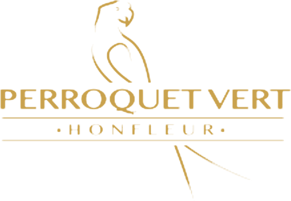
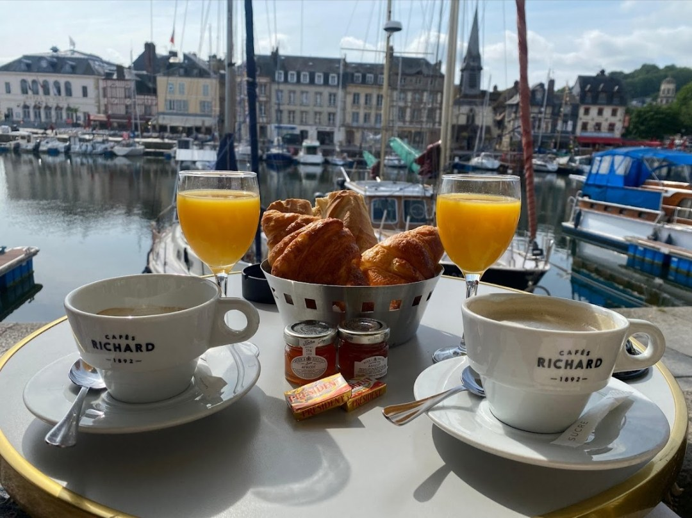
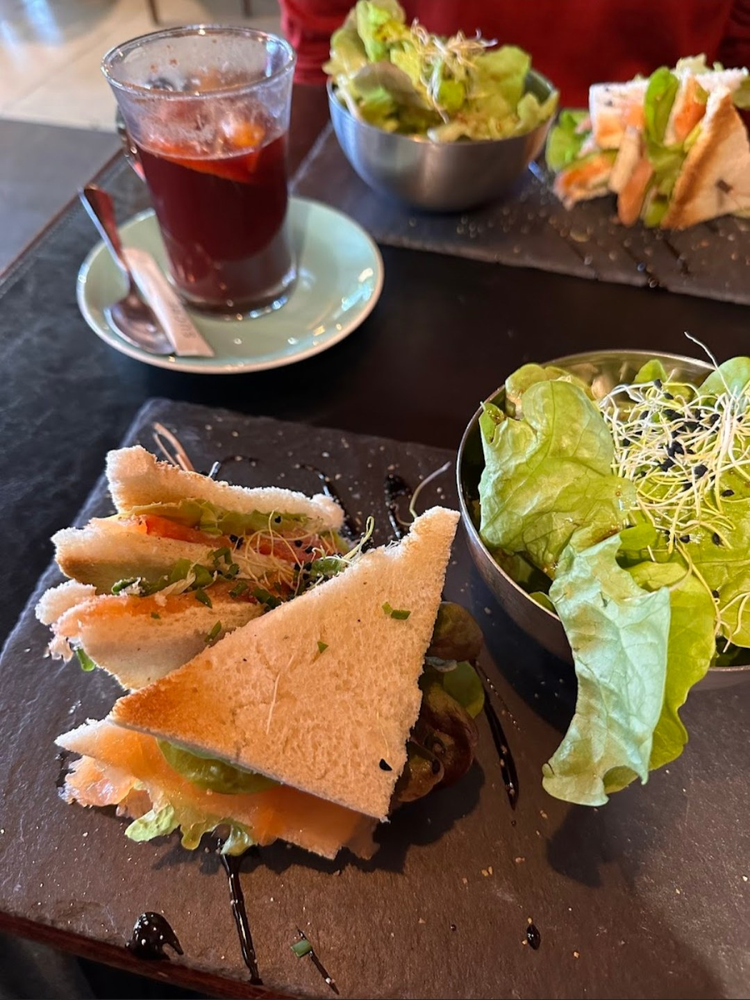
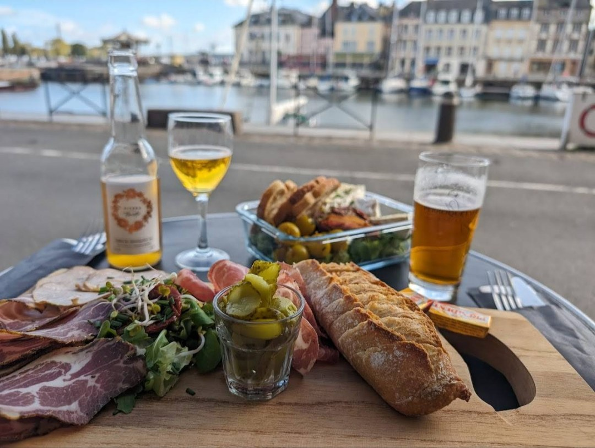
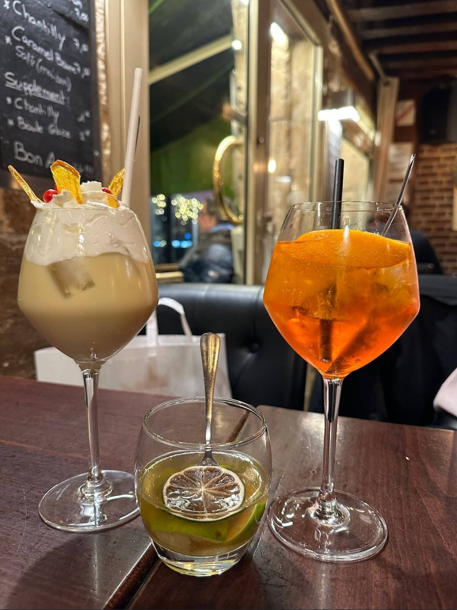
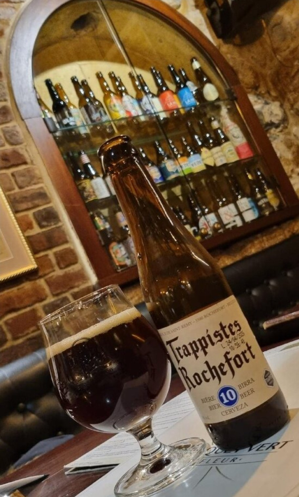
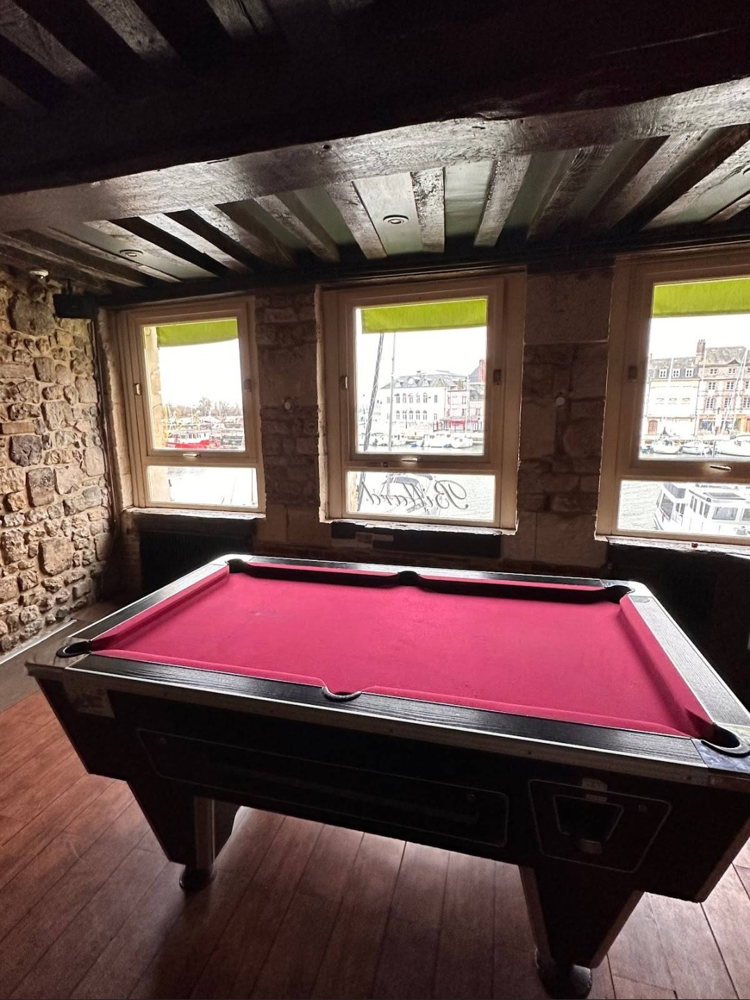

아침 식사
커피, 갓 짠 오렌지 주스, 빵. 아침 세트는 테라스나 실내에서 드실 수 있습니다.

공간
테라스에서 즐기는 아침 식사, 배를 바라보며 먹는 브런치, 함께 나누는 플래터, 저녁의 생맥주 한 잔과 칵테일. 르 페로케 베르는 항구의 하루를 시간마다 따라갑니다.
아침 커피, 오후의 산책, 마지막 한 잔. 시간마다 찾아오는 손님은 다르지만, 모두가 같은 부두를 함께 나눕니다.

항구가 내다보이는 창가, 들보 아래의 당구대.
친구들과 함께하는 한 게임, 언제든지.
매년 4월부터 10월 말까지 확장됩니다.
잠시 일을 하거나 휴대폰을 충전하세요.
메뉴
하루의 흐름에 맞춘 간결한 메뉴입니다. 전체 메뉴는 매장에서 확인하실 수 있습니다.
커피, 갓 짠 오렌지 주스, 빵. 아침 세트는 테라스나 실내에서 드실 수 있습니다.

샐러드, 클럽 샌드위치, 크로크, 버거를 점심시간에 즐기실 수 있습니다.
채식 메뉴
샤퀴트리, 비르산 앙두이으, 신선한 빵. 아페리티프 시간에 함께 나누세요.

가벼운 스프리츠부터 달콤하고 풍성한 잔까지, 테라스와 실내에서 즐기세요.

맥주
생맥주 세 종류 중 하나는 새로운 양조장을 소개하기 위해 정기적으로 바뀝니다. 병맥주는 여러 나라의 맥주로 구성되어 있습니다. 그리고 이 집만의 맥주, 비에르 뒤 페로케도 있습니다.
이야기
르 페로케 베르는 1975년부터 이 부두를 지켜 왔습니다. 드러난 돌벽, 짙은 색의 들보, 배가 보이는 창. 공간은 본연의 질감을 간직한 채 오늘의 감각으로 다듬어졌고, 따뜻함은 그대로입니다.
옹플뢰르의 단골손님과 세계 각지의 여행자가 하루 중 언제든 같은 문을 열고 들어옵니다. 아침 커피부터 마지막 한 잔까지, 누구나 이곳에서 자기 자리를 찾습니다.

이용 안내
52 quai Sainte-Catherine
14600 Honfleur, 프랑스
매일 오전 8시 ~ 새벽 1시
계절에 따라 달라질 수 있습니다.
일반적으로 예약은 받지 않습니다. 특별한 날에는 전화로 문의해 주세요.
보행자 전용 부두.
테라스, 실내 홀, 당구, 다트, 와이파이, 충전 콘센트, 반려동물 동반 가능, 채식 메뉴.
프랑스어, 영어.